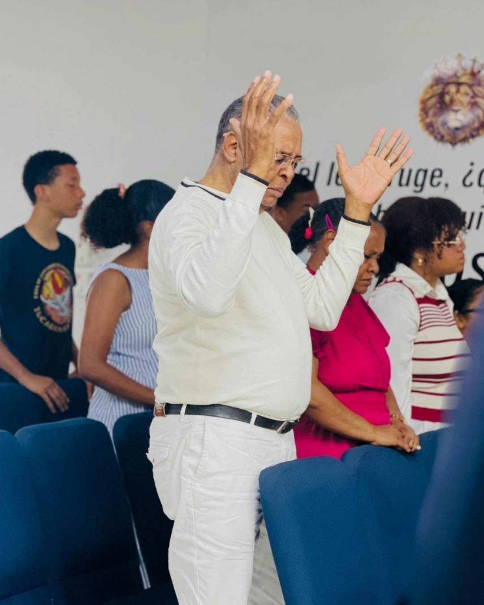
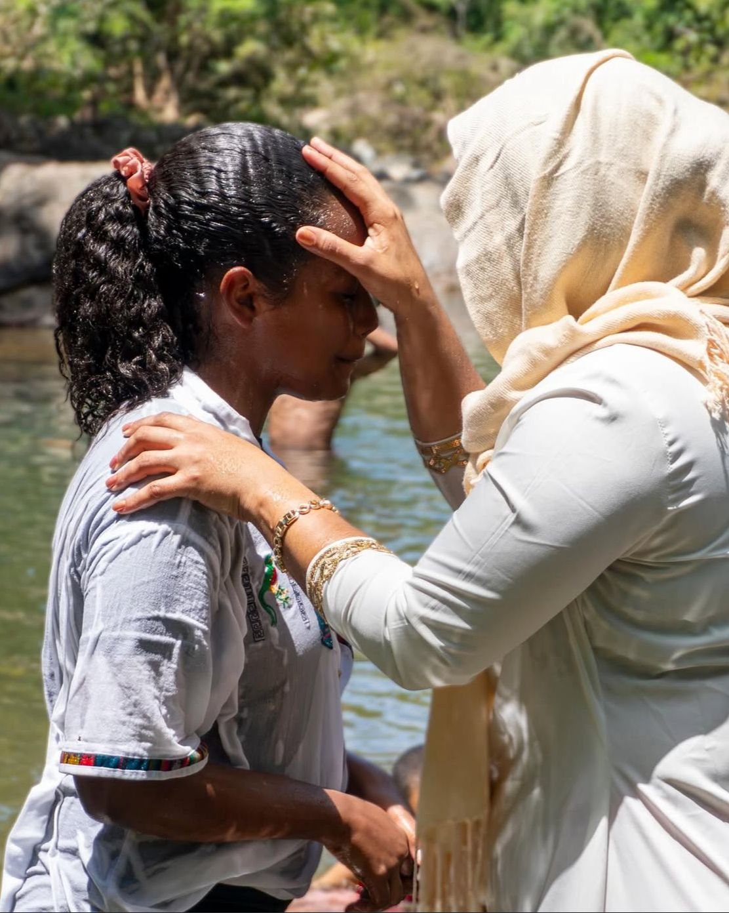
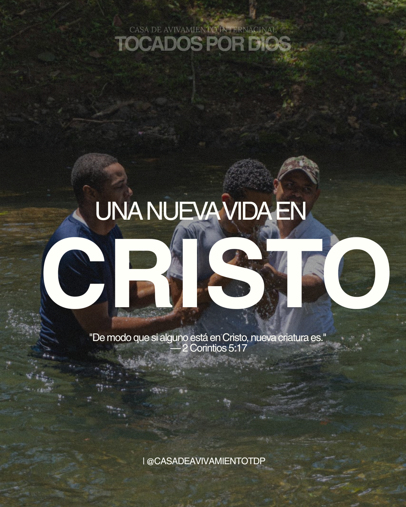
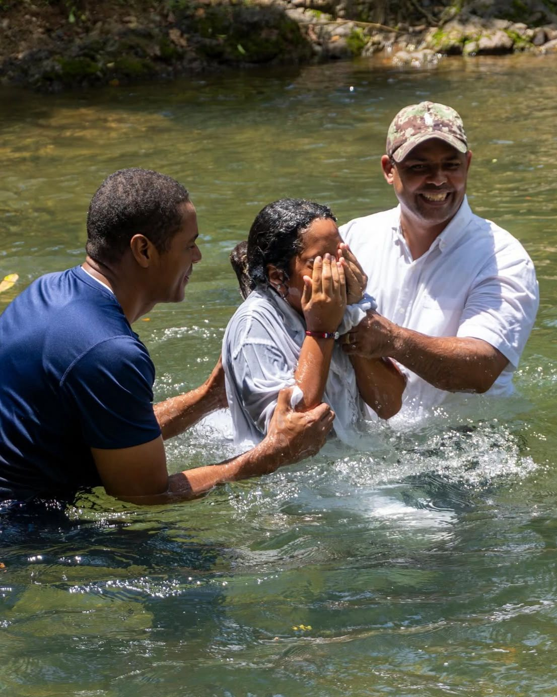

Bautismos en Cristo
El bautismo representa una nueva vida en Jesús. Un acto de fe y amor.
Un lugar para crecer en fe, fortalecer tu familia y adorar juntos en comunidad.

Somos una comunidad cristiana dedicada a compartir el evangelio, fortalecer familias y adorar juntos.
10 AM – 12 PM
7 PM – 9 PM
Estudio Bíblico
Escuela Bíblica 2pm-3pm
El bautismo representa una nueva vida en Jesús. Un acto de fe y amor.


